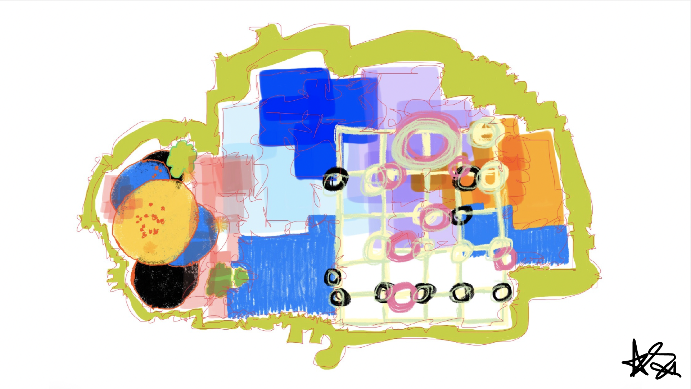

i guess i'll always be a dreamer: a short story of loneliness
yall niggas was crying about twister? i was crying because i cant even afford a monkey 2 play with in the first place!

[dreamer, atiyah saleemah, 2026]
It goes without question that I love Michael Jackson and anything Jackson related. I’ve been a fan of his and the family since I was seven years old. It is actually Michael Jackson that sparked my maladaptive daydreaming and my vast imagination. I can remember being a young girl in the backseat of my mom’s car, staring out into the window as I listened to “Maybe Tomorrow” and I imagined myself dating little Michael; he was actually one of my first real celebrity crushes outside of Anez from One on One. Most kids like me have gone through that inevitable MJ Phase, they might not have gone as far as to dating him in their head but you get my jest. Generations of children continue to go through this phase, well after Michael’s prime years and into his unfortunate death. The new biopic starring his nephew Jaafar has since elongated the legacy to precede any of us, there’s a constant saying that “Michael Jackson has fans not even born yet.” Which is very true. But while the movie has connected and re-connected fans with his music and the man behind it, I have found myself being connected to the one message within the film that has hit me harder than I expected it to, yet it has made me feel seen in all the ways I’ve never been able to accurately describe nor transparently express. That message to me is the feeling of true loneliness. There’s a scene that touched me deeply, you know, the one where he asks his brothers to play twister with him and all of them (who are already playing basketball together) find every other excuse in the world to not play with him. So what does Mike do? He plays the game anyway but with his baby chimp, Bubbles. That’s a recurring theme throughout the movie; him finding solace outside of his music within his animals instead of other humans. There was something in that that spoke to me beyond Jaafar’s incredible performance. In that, I slowly realized for the first time in my life that the indescribable loneliness I’ve always felt had been personified in the most poetic way; loneliness isn’t always being in isolation, it’s the feeling of being surrounded by so many people and yet connecting to none. I can remember feeling like that when I was looking out windows and imagining myself escaping to other worlds, where people looked at me with understanding eyes and patient smiles. It felt like a distant dream that I could only see when I closed my eyes at night. This aching pain of disconnection has fell upon me since adolescence. I don’t know where it comes from or maybe that’s just my excuse because I’m too afraid to really bare my soul in this article. I don’t know if I want to put exact examples to my soul isolation because maybe that’ll make it too real or is it that I’m worried about my public perception of what people will think of me when they realize I don’t have many people around me I think I can trust? It’s those same people I’m worried about offending who wouldn’t dare call me on a random Tuesday to wonder if I ate or even woke up that day. Keeping up with me on social media is the only way they’d know what I look like now. There’s people I know right now that can’t tell you the last time they checked on my wellbeing yet I’m the one they text for all the answers to their problems. I’m the first texter all the time in my world but in my other world in my head, there’s a constant reciprocal energy on a Pete Rock beat loop. I can only count on one hand the figures in my life that try to reach inside my heart and hug it with their warm essence. Where is everyone else? I don’t know and I so desperately wished I could tell you. I never knew where they were but I recognized their absence. And I know what you’re thinking, why is she so worried about people that don’t do for her yet barely giving light to the people that do? Well my only answer would be that because the people that don’t do for me are the main wants who always want something from me; my time, my wisdom, and my undying loyalty. Yet I can’t even get a happy birthday unless I’ve posted it on a 24-hour story. Maybe this article has become less about loneliness and more about just how I’ve failed to create boundaries with people and to put on notice that my meter to please everyone has run out. It should be about that time where my exhaustion is turning into pure rage over what I’ve allowed others to take from me without receiving anything in return. Everyday I wake up, I don’t look to see who has texted me today outside Shein and Ulta Beauty because it’s never anything there. My disconnection to many others has a gap that fall even more wider as I conquer my day with a smile and laughter that roots from my belly. Because you see, I make due with what I have in life. I still try to have a good time even if it’s with the imaginary people in my head. The ones that come alive in scenarios that place me at the center of everyone’s attention and love. In these dreams, I dance just like Michael but in reality, I face his same loneliness. Only thing is: I don’t have a monkey playing Twister with me, I just have the four walls of my room.
★ starmoney